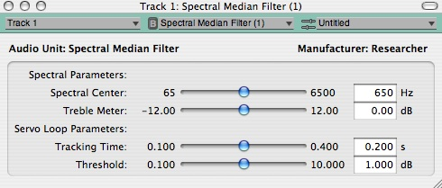
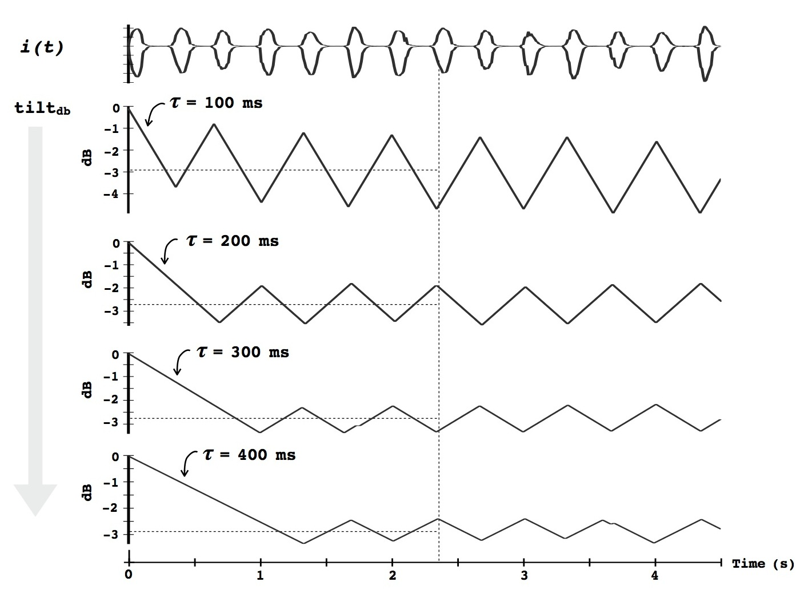

| tilt-filter servo-loop |
IntroductionDynamic filters change their filter shape in response to audio input. A de-esser is a good example of a dynamic filter: it detects sibilant vocal sounds, and responds by notching out the sibilance for a short period of time. In our 2012 AES convention paper in San Francisco, we described a dynamic filter plug-in that servos its output to have a constant tonal center.  The user interface of the plug-in lets the user set this "Spectral Center" frequency, and also set the "Tracking Time" and "Threshold" of the servo loop that controls the filter transfer function. Faster tracking times are good for envelope-follower style effects, while slower tracking times are good for use in mastering and as automatic tone controls. The plug-in works by servoing the tilt parameter of a tilt filter. See our AES paper [PDF] for technical details. Audio ExampleThe paper includes examples of plug-in behavior when processing various audio sources. Below are MP3 audio files for one of the examples. The example shows the plug-in processing a trombone loop for different tracking times, and corresponds to Figure 14 in the paper.  For all examples, the Spectral Center is set to 60 Hz and the Threshold is set to 0.1 dB. The audio files start with the plug-in audio input, followed by a short pause and the plug-in audio output. Tracking Time = 100ms: Tracking Time = 200ms: Tracking Time = 300ms: Tracking Time = 400ms: |
DownloadsA Mac OS X disk image file that contains the AudioUnit plug-in may be downloaded by clicking here. Clicking on the link will download the disk image file tilt-au.dmg to the place where downloads usually happen for your web browser. To install the plug-in, open the disk image, and drag the the folder plugin to your disk. Open the folder, and read the file README.TXT for instructions on installing and using the plug-in. Source CodeYou can download source code for the plug-in by clicking here. Clicking on the link will download the ZIP file dist.zip to the place where downloads usually happen for your web browser. Unzip the file (by double-clicking its icon in Finder, or by using the unzip command in Terminal) to create the folder dist. Open the folder, and read the file README.TXT for information about the source code distribution. ReferencesJohn Lazzaro and John Wawrzynek (2012). A Tilt Filter in a Servo Loop The 133th Convention of the Audio Engineering Society (AES), October 26-29, 2012, San Francisco, CA, USA. [PDF]. |
| tilt-filter servo-loop |